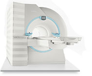
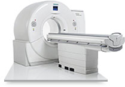
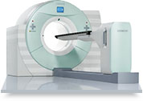
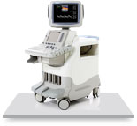

Высокопольная МРТ
 подробнее
Магнитно-резонансной томограф Siemens Magnetom Symphony 1,5Т - передовая магнитно-резонансная система, которая позволяет проводить самые высокотехнологичные исследования, задает новые стандарты по уровню комфорта за счет короткого и широкого дизайна магнита
и передне-фронтального доступа к пациенту, что значительно снижает проблему клаустрофобии.
Двухэнергетическая
 подробнее
Компьютерная томография (КТ) – современная система SOMATOM Definition DS 128, оборудование признанного мирового лидера – фирмы Siemens со 128-срезовой конфигурацией и поддержкой всех последних достижений в области КТ, что обеспечивает точность диагностики и комфорт для пациентов во время исследований. Данная система позволяет снизить лучевую нагрузку на пациента с сохранением высокого качества мультиспиральной томографии.
Совмещенная ПЭТ/КТ
 подробнее
Совмещённая позитронно-эмиссионная компьютерная томография (ПЭТ/КТ) – современный высокотехнологичный метод молекулярной визуализации позволяющий определить изменения в органах и тканях на метаболическом уровне. ПЭТ/КТ с 18F ФДГ в режиме «всё тело» высокоэффективна при диагностике многих онкологических заболеваний. В организм пациента вводится специальный радиофармпрепарат, после чего проводятся низкодозная КТ и ПЭТ высокого разрешения с построением совмещённых изображений.
УЗИ
 подробнее
УЗИ аппарат экспертного класса General Electric Logiq 7 - это полностью цифровая многоцелевая ультразвуковая система, в которой используется новая уникальная архитектура TruScan. Она делает возможным кодированное сканирование (Code Scan), интеллектуальное сканирование (Smart Scan), комфортное сканирование (Comfort Scan) и полный доступ (TruAccess).